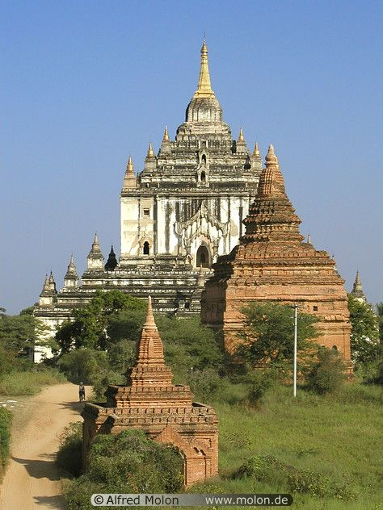

ပုဂံ သမိုင်းအကျယ်တဝင့်
ပုဂံသည် မြန်မာနိုင်ငံ မန္တလေးတိုင်း ဒေသကြီးရှိ UNESCO ကမ္ဘာ့အမွေအနှစ်နေရာတစ်ခုဖြစ်သည်။ ၉ ရာစုမှ ၁၃ ရာစုအထိ မြို့တော်သည် ပုဂံမင်း၏ မြို့တော်ဖြစ်ခဲ့ပြီး နောက်ပိုင်းတွင် မြန်မာတို့ ပေါင်းစည်းမည့် ဒေသများကို ပေါင်းစည်းခဲ့သည့် ပထမဆုံးသော ဘုရင်ဖြစ်ခဲ့သည်။ (၁၁)ရာစုမှ (၁၃)ရာစုကြားကာလတွင် ပုဂံမြေပြန့်ဒေသတစ်ခုတည်းတွင် ဗုဒ္ဓဘာသာဘုရားကျောင်းများ၊ ဘုရားများနှင့် ဘုန်းတော်ကြီးကျောင်းပေါင်း 10,000 ကျော် ဆောက်လုပ်ခဲ့ပြီး စေတီပေါင်း 2200 ကျော် ကျန်ရှိနေသေးသည်။
ဗျုပ္ပတ်
Bagan သည် ဗမာစကား Pugan ၏ မျက်မှောက်ခေတ် စံမြန်မာအသံထွက်ဖြစ်ပြီး Old Burmese Pukam (ပုကမ်) မှ ဆင်းသက်လာခြင်းဖြစ်သည်။ ၎င်း၏ဂန္တဝင်ပါဠိအမည်မှာ အရိမဒ္ဒနာပူရ (အရိမဒ္ဒနာပူရ၊ ထွန်းညှိ၍ ရန်သူများကို နင်းချေသောမြို့) ဖြစ်သည်။ ပါဠိလို အခြားအမည်များမှာ ခြောက်သွေ့ဇုံ ရာသီဥတုကို ရည်ညွှန်းခြင်းဖြစ်သည်- သတ္တဒေဿ (တတ္တဒေသ၊ သွေ့ခြောက်သောမြေ)၊ နှင့် တမ္ပဒီပ (တမ္ပဒီပ၊ "ကြေးဝါပြည်")။ မြန်မာရာဇဝင်များတွင် သီရိပစ္စယာ (သီရိပစ္စယာ၊ ပါဠိ- သီရိပက္ခယာ) နှင့် တမ္ပဝတီ (တမ္ပဝတီ၊ ပါဠိ- Tampavatī) တို့၏ အခြားဂန္တဝင်အမည်များကိုလည်း ဖော်ပြသည်။ ၁၀၄၄ ခုနှစ်မှ ၁၂၈၇ ခုနှစ်အတွင်း ပုဂံသည် ပုဂံအင်ပါယာ၏ နိုင်ငံရေး၊ စီးပွားရေးနှင့် ယဉ်ကျေးမှုဆိုင်ရာ အာရုံကြောဗဟိုဌာနအဖြစ် တည်ရှိခဲ့သည်။ နှစ်ပေါင်း 250 ကာလအတွင်း ပုဂံမင်းများ နှင့် ချမ်းသာသော လက်အောက်ခံ လူမျိုးများ သည် သာသနာ့ အထိမ်းအမှတ် အဆောက်အဦး 10000 ကျော် ( စေတီပုထိုး 1000 ခန့် ၊ စေတီငယ် 10000 နှင့် 3000 ဘုန်းကြီးကျောင်း )[2] ဧရိယာ 104 km2 (40 sq mi) တွင် ပုဂံ တွင် ရှိသည်။ သာယာဝပြောသောမြို့သည် အရွယ်အစားကြီးမား၍ ကြီးပွားတိုးတက်ပြီး ဘာသာရေးနှင့် လောကီရေးရာ လေ့လာမှုများအတွက် ကမ္ဘာအရပ်ရပ်၏ ဗဟိုဌာနဖြစ်လာကာ ပါဠိပညာ သဒ္ဒါနှင့် ဒဿန-စိတ်ပညာ (အဝိဇ္ဇာ) ဘာသာရပ်တို့အပြင် အလင်္ကာ၊ အသံ၊ သဒ္ဒါ၊ နက္ခတ်ဗေဒင်၊ အဂ္ဂိရတ်ပညာ၊ ဆေးပညာနှင့် ဥပဒေဆိုင်ရာ လေ့လာမှုများ။ ထိုမြို့သည် အိန္ဒိယ၊ သီရိလင်္ကာနှင့် ခမာအင်ပါယာအထိ ဘုန်းကြီးများနှင့် ကျောင်းသားများကို ဆွဲဆောင်ခဲ့သည်။ ပုဂံအင်ပါယာ (၁၂၇၇-၁၃၀၁) တွင် အကြိမ်ကြိမ် မွန်ဂိုကျူးကျော်မှုများကြောင့် ၁၂၈၇ ခုနှစ်တွင် ပြိုကျခဲ့သည်။ မကြာသေးမီက သုတေသနပြုချက်များအရ မွန်ဂိုတပ်များသည် ပုဂံသို့ မရောက်ရှိနိုင်ကြောင်းနှင့် ၎င်းတို့ပြုလုပ်ခဲ့လျှင်ပင် ထိခိုက်ပျက်စီးမှုမှာ အနည်းငယ်မျှသာ ဖြစ်နိုင်ကြောင်း ပြသထားသည်။ သို့သော်လည်း ပျက်စီးမှု ပြီးသွားပြီ။ တစ်ချိန်က လူ ၅၀,၀၀၀ မှ ၂၀၀,၀၀၀ ခန့်နေထိုင်သည့်မြို့သည် မြို့ငယ်လေးအဖြစ်သို့ လျော့ကျသွားခဲ့ပြီး ထင်ရှားကျော်ကြားမှုကို ဘယ်တော့မှ ပြန်မရနိုင်တော့ပေ။ 1297 ခုနှစ် ဒီဇင်ဘာလတွင် မြင်းဆိုင်းဘုရင့်နိုင်ငံတော်သည် အထက်မြန်မာပြည်တွင် အာဏာသစ်ဖြစ်လာသောအခါ မြို့တော်သည် မြန်မာနိုင်ငံ၏ မြို့တော်အဖြစ် တရားဝင် ရပ်ဆိုင်းခဲ့သည်။
ဗိသုကာပညာ
ပုဂံသည် မြန်မာတို့၏ သာသနာ့ဗိမာန်များသာမက အဆောက်အဦးများ၏ ခမ်းနားထည်ဝါသော ဗိသုကာလက်ရာများနှင့် မြန်မာဘုရားကျောင်း ဒီဇိုင်းအတွက်ပါ ပံ့ပိုးကူညီမှုများကြောင့် ပုဂံသည် ထင်ရှားသည်။ ပုဂံရှိ ဘုရားများ၏ ဗိသုကာလက်ရာများ၏ အနုပညာလက်ရာများသည် မြန်မာ့လက်မှုပညာသည်များ၏ အောင်မြင်မှုကို သက်သေပြနေပါသည်။ ပုဂံဘုရားကျောင်းသည် ကျယ်ဝန်းသော အမျိုးအစား နှစ်ခုအနက်မှ တစ်ခုဖြစ်သည့် စေတီတော်ပုံစံ ခိုင်မာသော ဘုရားကျောင်းနှင့် ဂူပုံစံ (ဂူ) အခေါင်းပေါက် ဘုရားကျောင်းတို့ ဖြစ်သည်။
ဆန်းသစ်တီထွင်မှုများ
မြန်မာဘုရားကျောင်း ဒီဇိုင်းများသည် အင်ဒစ်၊ ပျူ (နှင့် မွန်ဟုလည်း ဆိုနိုင်သည်) စတိုင်များမှ ပြောင်းလဲလာသော်လည်း ဗောက်ထခြင်း နည်းစနစ်များသည် ပုဂံတွင် ဖြစ်ထွန်းလာပုံရသည်။ ပုဂံရှိ အစောဆုံး စေတီပုထိုးများသည် ၁၁ ရာစုတွင် တည်ရှိပြီး ၁၂ ရာစုနှောင်းပိုင်းအထိ အိန္ဒိယတွင် ကျယ်ကျယ်ပြန့်ပြန့် မပြန့်ပွားခဲ့ပေ။ အဆောက်အဦးများ၏ အုတ်နံရံများသည် "အံ့ဩဖွယ်ရာ ပြီးပြည့်စုံမှုအတိုင်းအတာတစ်ခု" ကိုပြသထားရာ အဆိုပါ ဧရာမအဆောက်အဦများစွာသည် ၁၉၇၅ ခုနှစ်ငလျင်ဒဏ်ကြောင့် နဂိုအတိုင်း အနည်းနှင့်အများ ကျန်ရစ်ခဲ့သည်။ (ကံမကောင်းစွာဖြင့်၊ ပုဂံခေတ်နောက်ပိုင်းခေတ်များတွင် ဂေါ်ဖီရိုက်နည်းများ ပျောက်ကွယ်သွားခဲ့သည်။ ပုဂံနောက်ပိုင်းတွင် ဂူပုံစံပုထိုးငယ်များစွာသာ တည်ဆောက်ခဲ့သည်။ ဥပမာအားဖြင့် ၁၈ ရာစုတွင် ဘိုးတော်ဘုရားသည် ကျယ်ဝန်းသောပုံစံဖြင့် မင်းကွန်းစေတီကို တည်ဆောက်ရန် ကြိုးပမ်းခဲ့သည်။ အုတ်တံတိုင်းခတ်ထားသော စေတီတော်များသည် နောက်ပိုင်းခေတ်မှ လက်သမားဆရာများနှင့် ပန်းရံဆရာများအဖြစ် မအောင်မြင်ဘဲ ပုဂံအခေါင်းပေါက်အတွင်းပိုင်း နေရာအကျယ်အဝန်းကို မျိုးပွားရန်အတွက် ဂေါ်ရနှင့် သော့ခတ်ခြင်းဆိုင်ရာ အသိပညာများ ဆုံးရှုံးခဲ့ရသည်။ ပုဂံတွင် ပေါ်ပေါက်လာသော နောက်ထပ် ဗိသုကာလက်ရာ ဆန်းသစ်တီထွင်မှုမှာ ပဉ္စဂံကြမ်းခင်း အစီအစဉ်ဖြင့် ဗုဒ္ဓဘာသာဘုရားကျောင်းဖြစ်သည်။ ဤဒီဇိုင်းသည် ဟိုက်ဘရစ် (မျက်နှာတစ်မျက်နှာနှင့် လေးမျက်နှာ ဒီဇိုင်းများကြား) ဒီဇိုင်းများမှ ပေါက်ဖွားလာခြင်းဖြစ်သည်။ နိဗ္ဗာန်သည် ထင်ရှားရှိပြီးသား လေးပါးတို့အပြင် ဤခေတ်၏ အနာဂတ်နှင့် ပဉ္စမဗုဒ္ဓမြတ်စွာဘုရားတို့ကို ကြည်ညိုခြင်းလည်း ပါဝင်သည်။ ဓမ္မယိဇိကာနှင့် ငmyethna စေတီတို့သည် ပဉ္စဂံပုံစံ နမူနာများဖြစ်သည်။
| ဘုရားစေတီပုထိုး | ဓာတ်ပုံတော် | တည်ဆောက်ခုနှစ် | တည်ဆောက်ခဲ့သူမင်းများ | မှတ်သားဖွယ်အချက် |
|---|---|---|---|---|
| အာနန္ဒာ ဘုရား |  |
၁၁၀၅ | ကျန်စစ်သား မင်း | ပုဂံရှိ အကျော်ကြားဆုံး ဘုရားကျောင်းများထဲမှ တစ်ခု။ အမြင့် 51 မီတာ (167 ပေ) |
| ဘူးဘုရား | ၈၅၀ | ပျူစောထီး မင်း | ပျူစတိုင်၊ ၁၉၇၅ ငလျင်ကြောင့် ပျက်စီးသွားသော မူလ ၉ ရာစု စေတီ၊ လုံး၀ ပြန်လည်တည်ဆောက်ထားပြီး၊ ယခု ရွှေတုံးလုပ်ထားသည်။ | |
| ဓမ္မရံကြီး ဘုရား |  |
၁၁၆၇-၁၁၇၀ | နရသူ မင်း | ပုဂံရှိ ဘုရားများအားလုံးတွင် အကြီးဆုံးဖြစ်သည်။ |
| သဗ္ဗညု ဘုရား |  | ၁၁၅၀/၅၁ | စည်သူ (၁) | 66 မီတာ (217 ပေ); ပုဂံတွင် အမြင့်ဆုံးဘုရား |
| ရွှေဆံတော် ဘုရား | ၁၀၅၇ | အနော်ရထာ မင်း | 100 မီတာ (328 ပေ) မြင့်ပြီး၊ ပုဂံတွင် အမြင့်ဆုံးစေတီ | |
| ရွှေစည်းခုံ ဘုရား | ၁၀၅၉-၁၀၆၀ | အနော်ရထာ/ကျန်စစ်သား မင်း | ||
| မဟာ စေတီတော် | 921 | ဆင်ဖြူများရှင် | ||
| ထီးလိုမင်းလို ဘုရား | 1218 | ဇေယျသိခ် မင်း | 46 မီတာ (151 ပေ) 3 ထပ်ဘုရားကျောင်း | |
| မဟာဗောဓိ စေတီတော် | ၁၉၇၉ | ထီးလိုမင်းလို | ဗုဒ္ဓဂယာရှိ မဟာဗောဓိဘုရားကျောင်း၏ သေးငယ်သော ပုံတူ | |
| ရွှေဂူကြီး ဘုရား | ၁၁၃၁ | စည်သူ (၁) | ၎င်း၏ ခုံးပြတင်းပေါက်များကြောင့် လူသိများသည်။ | |
| ဘုရား သုံးဆူ |  |
၁၂၀၀ | - | မဟာယာနနှင့် တန်ထရစ်စတိုင်များ |
| စူဠာမဏိ စေတီတော် |  |
၁၁၈၃ | စည်သူ (၂) |